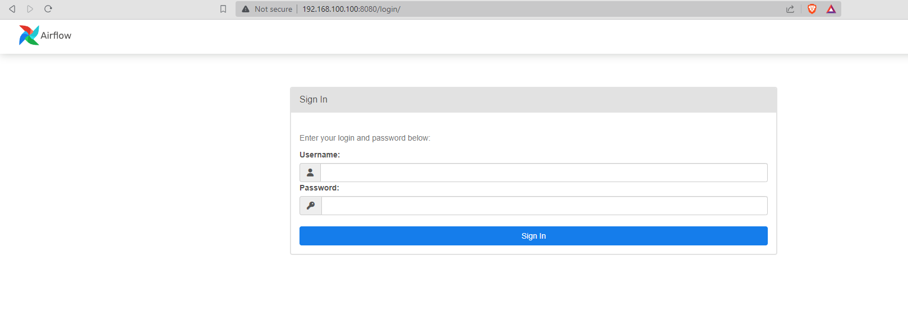
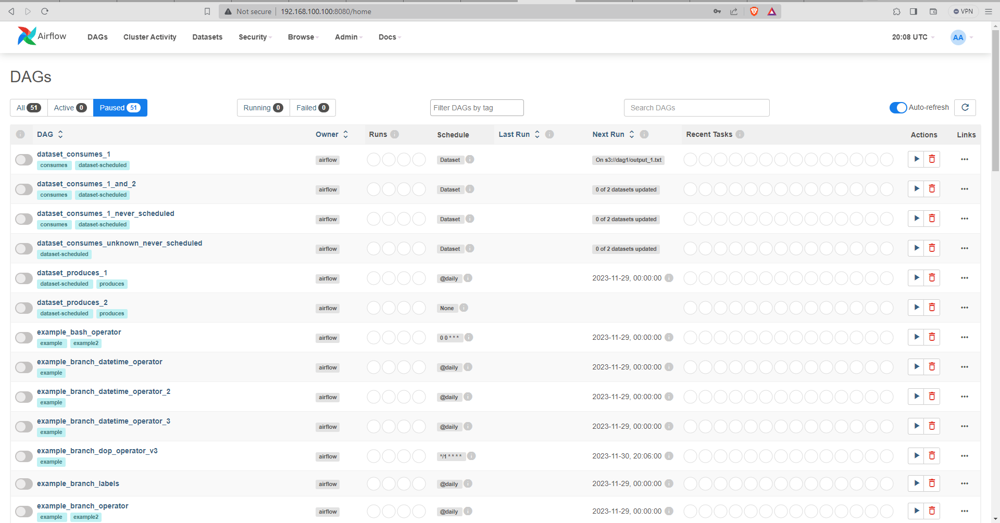

Install Using Docker
Version: 2.7.3
Step to Step: Install docker
1. Remove install docker (user with sudo permissions):
$ sudo yum remove docker \ docker-client \ docker-client-latest \ docker-common \ docker-latest \ docker-latest-logrotate \ docker-logrotate \ docker-engine 2. Install the yum-utils package (which provides the yum-config-manager utility) and set up the repository.
$ sudo yum install -y yum-utils
3. Install Docker Engine, containerd, and Docker Compose:
$ sudo yum-config-manager --add-repo https://download.docker.com/linux/centos/docker-ce.repo
4. To install the latest version, run:
$ sudo yum install docker-ce docker-ce-cli containerd.io docker-buildx-plugin docker-compose-plugin
5. Activate service:
$ sudo systemctl enable docker
6. Start service:
$ sudo systemctl start docker
7. Review install and version:
$ sudo docker ps -a
$ sudo docker --version
Step to Step: Install docker-compose
1. To download and install Compose standalone, run:
$ sudo curl -SL https://github.com/docker/compose/releases/download/v2.23.3/docker-compose-linux-x86_64 -o /usr/local/bin/docker-compose
2. Test and execute compose commands using docker-compose.
$ sudo ln -s /usr/local/bin/docker-compose /usr/bin/docker-compose
3. Add permissions:
$ sudo chmod +x /usr/local/bin/docker-compose
4. Review install and version:
$ docker-compose --version
Step to Step: Install airflow-docker
1. Create and open folder for airflow:
$ mkdir /home/dcuasapaz/docker/airflow_2.7.3
$ cd /home/dcuasapaz/docker/airflow_2.7.3
2. Download docker-compose for airflow:
$ sudo curl -LfO 'https://airflow.apache.org/docs/apache-airflow/2.7.3/docker-compose.yaml'
3. Create folders:
$ mkdir ./dags ./plugins ./logs
4. Let's run the initialization script to create a user and upgrade the airflow.
$ sudo docker-compose up airflow-init
5. If the script ran successfully, you would get the above message. Make sure you are getting the same. Now, let�s start all the airflow services.
$ sudo docker-compose up -d
6. View docker list
$ sudo docker ps
7. Open link in your browser: http://localhost:8080/
User: airflow
Password: airflow

8. View main page: 
References: Docker
https://docs.docker.com/engine/install/centos/
Docker-composehttps://docs.docker.com/compose/install/standalone/
Docker-composehttps://www.hostinger.es/tutoriales/instalar-docker-centos7
Docker-composehttps://www.digitalocean.com/community/tutorials/how-to-install-and-use-docker-compose-on-centos-7
Apache Airflow - Dockerhttps://naiveskill.com/install-airflow/
Read more